Sally Ride: The First American Woman in Space
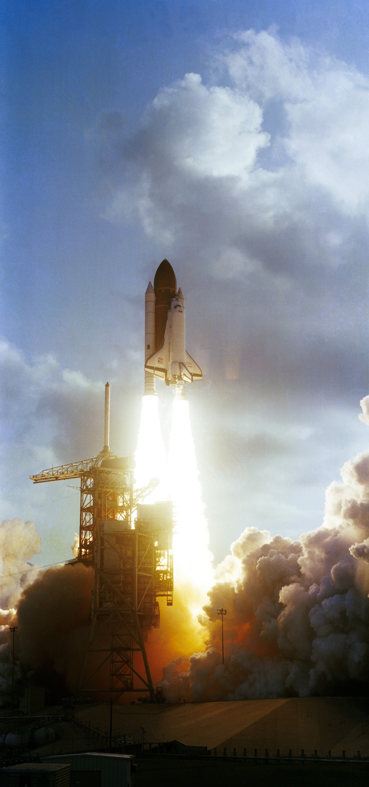
STS-7 Launch
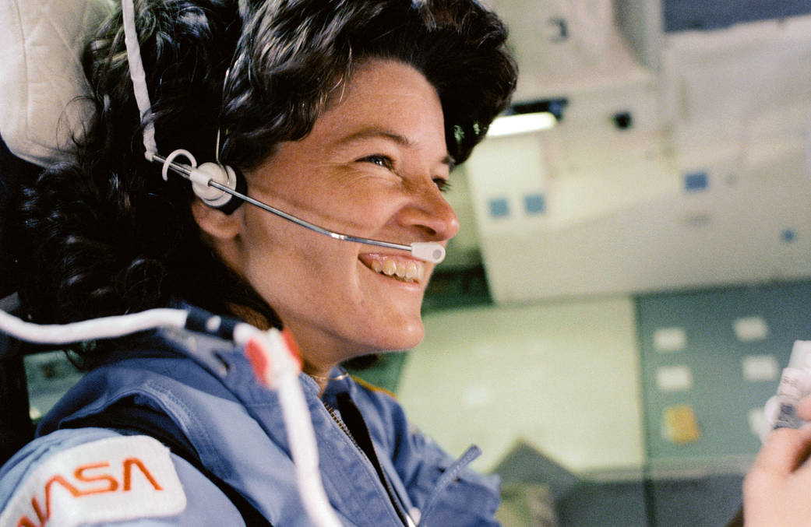
Part 1: Early Life
Sally began her undegraduate studies at Swarthmore College, and briefly
considered pursuing a career as a professional tennis player (after seeing her play, Billie Jean King
encouraged her to go pro). Instead, she opted to study physics and finished her bachelor’s degree at
Stanford University. She stayed there, continuing on with her Master’s degree and eventually her PhD.
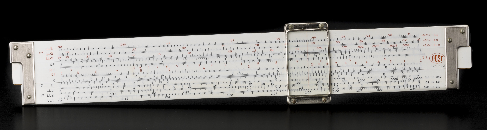
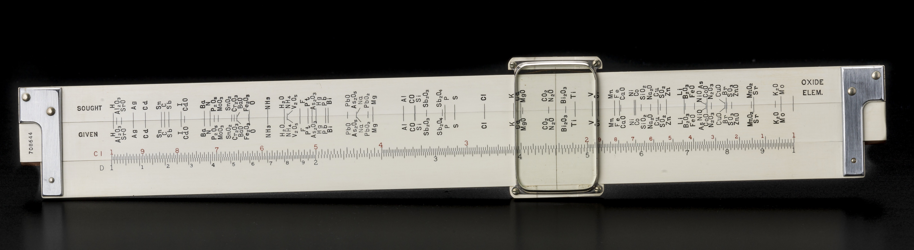
This chemical slide rule was used for determining the mass of atoms and
molecules. Before pocket-sized electronic calculators became available in the 1970s, slide rules were
used as an aid to complex mathematical operations. Ride used this device as a university student.
While completing the program, she saw a newspaper advertisement
recruiting astronauts for NASA’s next mission. She decided to apply.
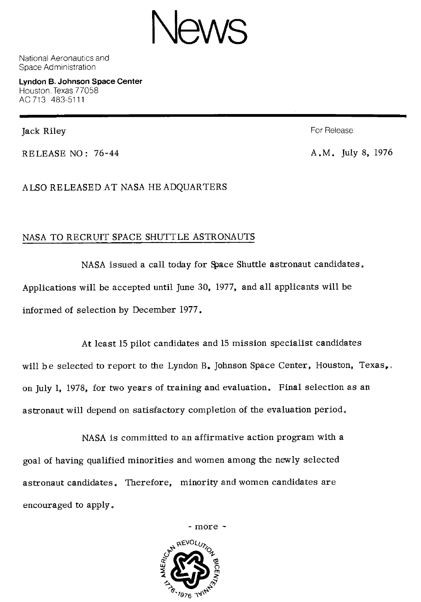
Hover to enlarge
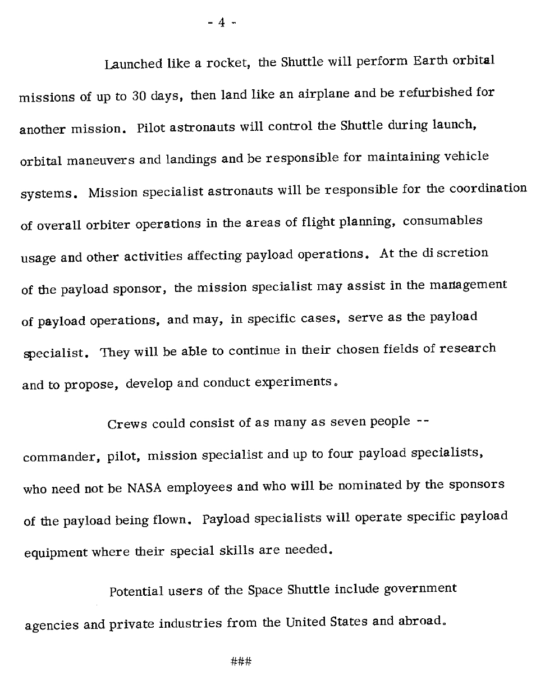
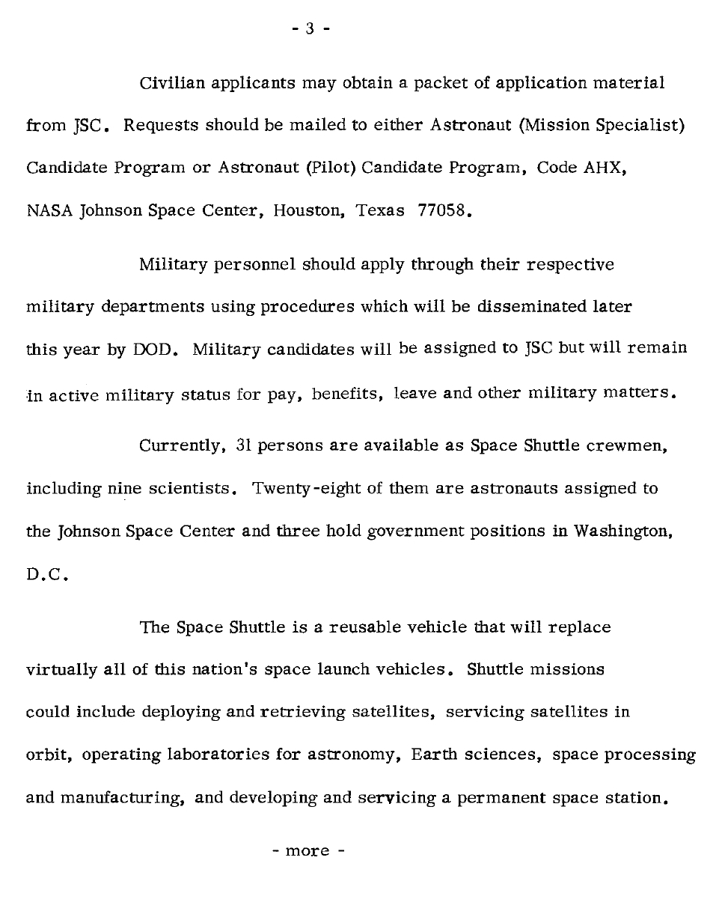
Part 2: Training
In October of 1977 she went to the NASA Johnson Space Center to undergo
medical tests and interviews as part of the selection process. Three months later, she was chosen with five other women and 29 men to create the first class of astronauts for the space shuttle
program.
Ride began training as a mission specialist in preparation for her first mission, STS-7. Although she was training to be a scientist astronaut and not a pilot, she was required to spend 15 hours a month on board a T-38 jet practicing navigation and communication procedures while preparing herself for high performance flight. Part of the job entailed manually calculating factors such as fuel burn, ground speed, and estimated time arrival. Here, the aviation slide rule came in handy. She enjoyed flying the T-38 so much so that she took lessons and got her pilot license.
Ride began training as a mission specialist in preparation for her first mission, STS-7. Although she was training to be a scientist astronaut and not a pilot, she was required to spend 15 hours a month on board a T-38 jet practicing navigation and communication procedures while preparing herself for high performance flight. Part of the job entailed manually calculating factors such as fuel burn, ground speed, and estimated time arrival. Here, the aviation slide rule came in handy. She enjoyed flying the T-38 so much so that she took lessons and got her pilot license.
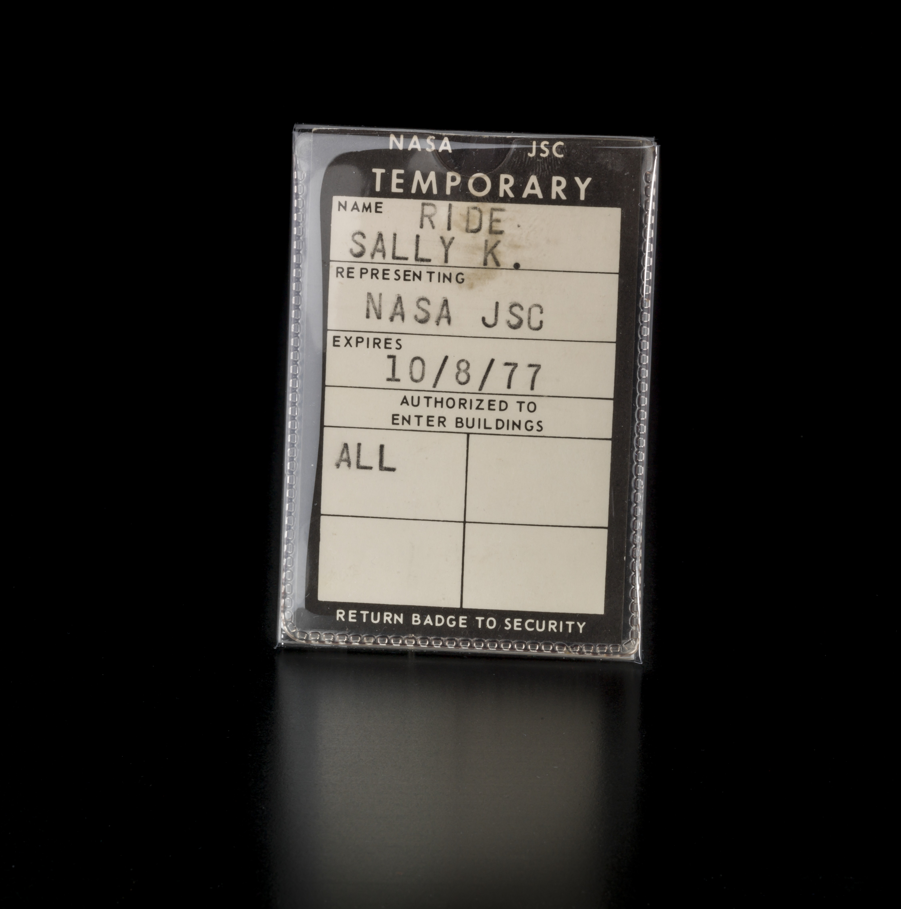
Temporary badge
Hover to enlarge
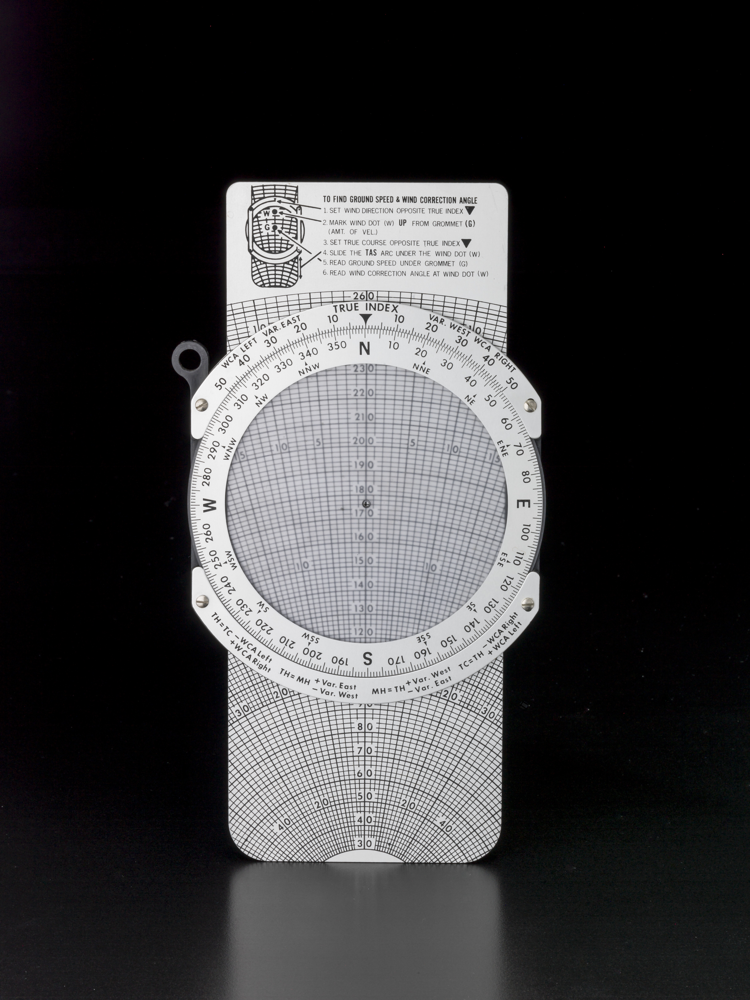
Aviation slide rule
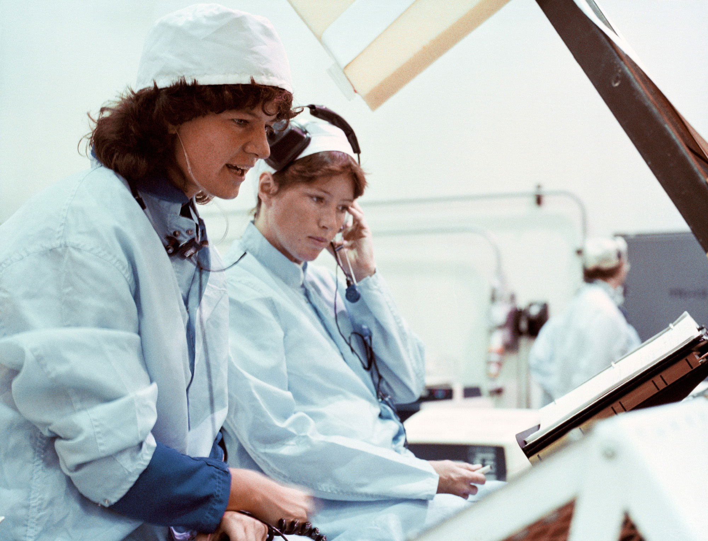
Ride participates in a mission sequence test

Helmet Ride used during training flights
On June 15, 1983, three days before launch aboard Space Shuttle
Challenger, Sally Ride takes a last look at Houston before taking off in a T-38 jet, bound for NASA's
Kennedy Space Center in Florida.
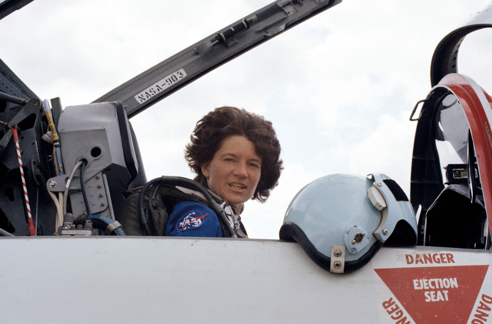
Ride bound for NASA's Kennedy Space Center in Florida

The mission carried the largest crew to date, and included:
Robert L. Crippen (Commander),
Frederick H. Hauck (Pilot),
John M. Fabian (Mission Specialist),
Sally K. Ride, (Mission Specialist), and
Norman E. Thagard (Mission Specialist)
Robert L. Crippen (Commander),
Frederick H. Hauck (Pilot),
John M. Fabian (Mission Specialist),
Sally K. Ride, (Mission Specialist), and
Norman E. Thagard (Mission Specialist)
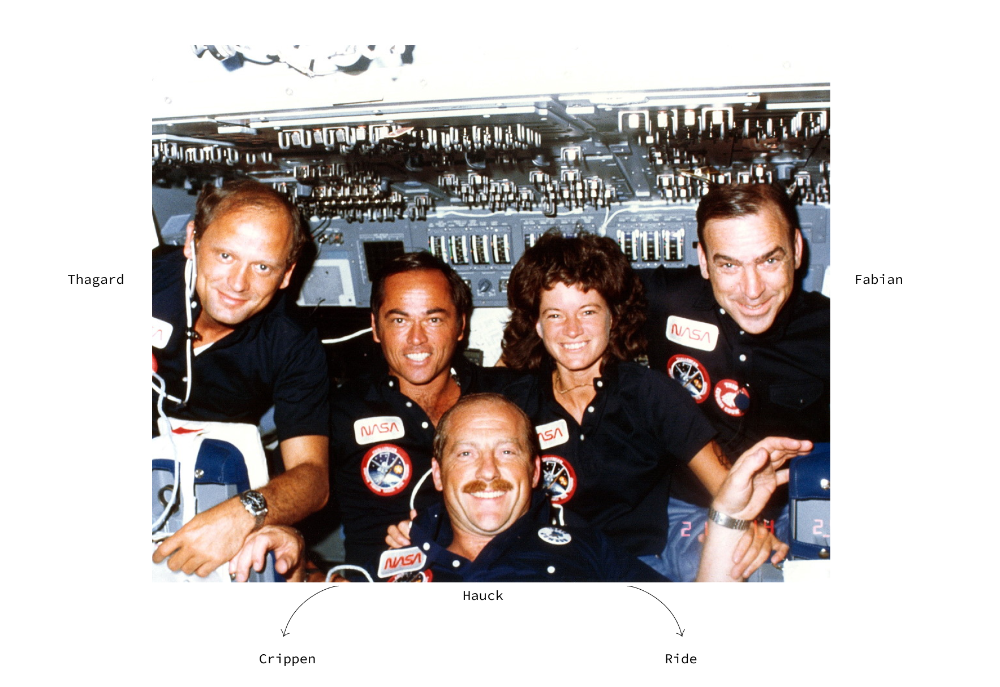
Part Four:Communication Satellites
One of the main goals of the mission was to deploy two communications
satellites: ANIK C-2 for TELESAT Canada and PALAPA-B1 for Indonesia.
Palapa B is the second generation of satellites for Indonesia. Two of the communications satellites are being built for PERUMTEL, Indonesia's state-owned telecommunications company. With its 24 transponders, Palapa B was able to deliver voice, video, telephone and high-speed data services electronically linking Indonesia's many islands and bringing advanced telecommunications to the nation's 130 million inhabitants. Palapa operated at 108 degrees east longitude.
Palapa B is the second generation of satellites for Indonesia. Two of the communications satellites are being built for PERUMTEL, Indonesia's state-owned telecommunications company. With its 24 transponders, Palapa B was able to deliver voice, video, telephone and high-speed data services electronically linking Indonesia's many islands and bringing advanced telecommunications to the nation's 130 million inhabitants. Palapa operated at 108 degrees east longitude.
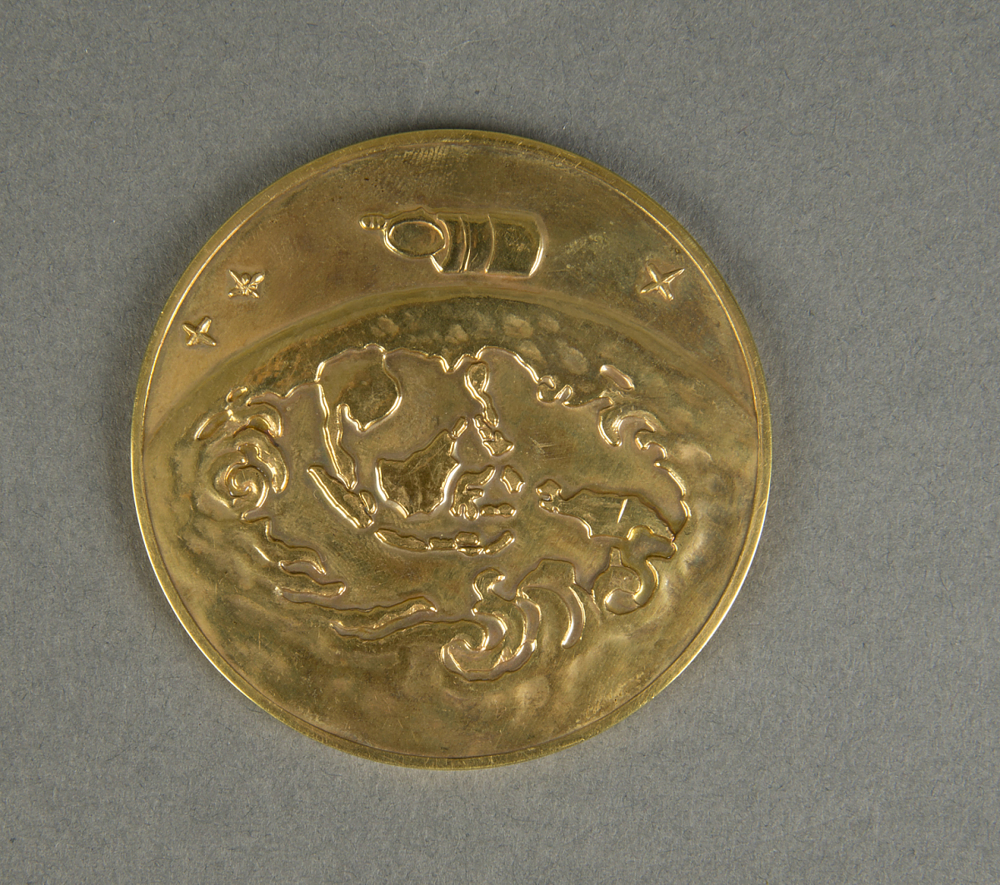
Palapa-B Satellite medal owned by Ride
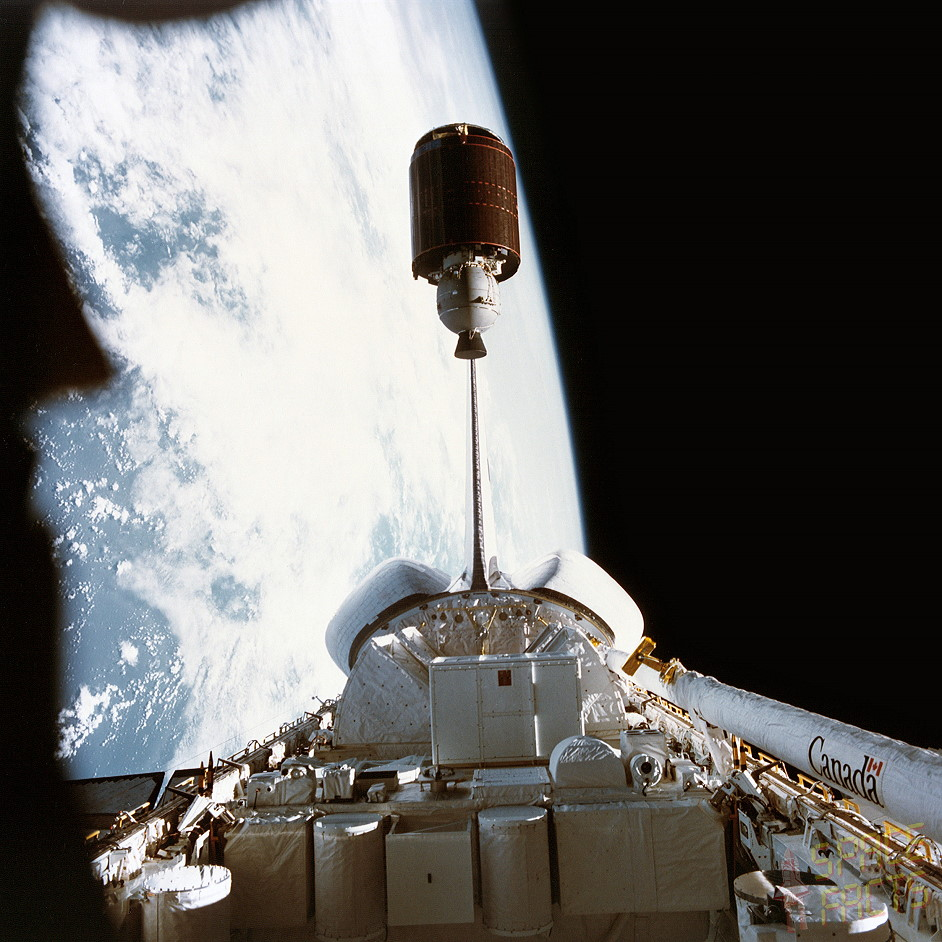
Palapa-B satellite being deployed
"The thing that I’ll remember most about the flight is that it was
fun," said Ride. “In fact, I’m sure it was the most fun I’ll ever have in my life.”
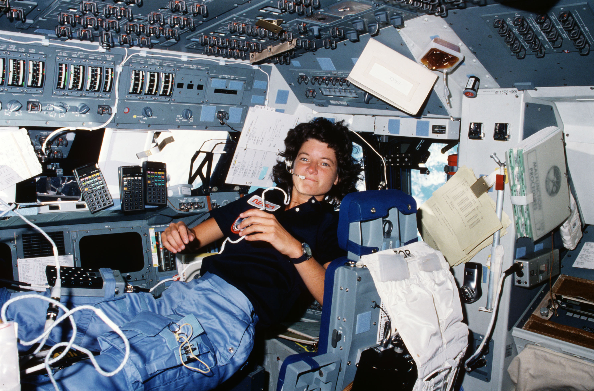
Ride floating in the Challenger flight deck
Part Five: SPAS
Another important important goal of the mission was to deploy the Shuttle
Pallet Satellite (SPAS-01). SPAS-01 was unique in that it was built to operate in the payload bay or be
deployed by the RMS as a free-flying satellite.
The RMS, or Remote Manipulator System, was a robotic arm used on the Space Shuttle to deploy, maneuver, and capture payloads.
The RMS, or Remote Manipulator System, was a robotic arm used on the Space Shuttle to deploy, maneuver, and capture payloads.
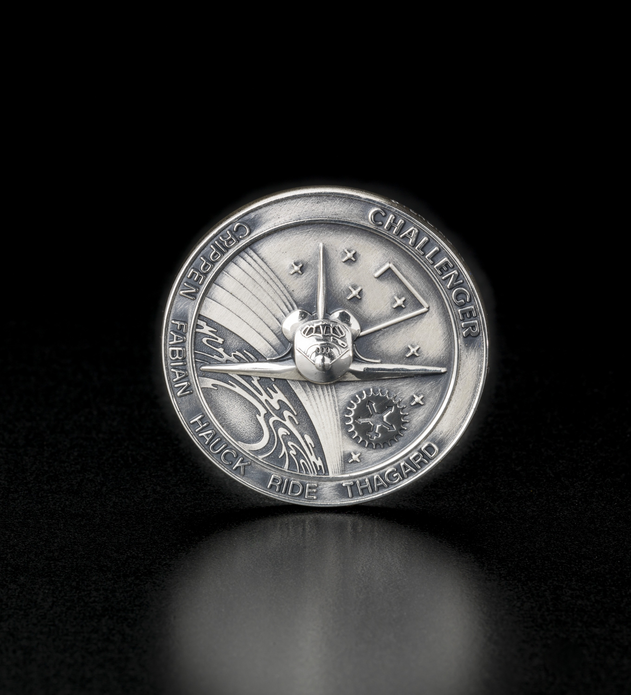
Ride’s STS-7 medallion, with robotic arm in the shape of a seven
One of Ride’s principal responsibilities was to operate the robotics arm to deploy
and retrieve the SPAS-01. It was mounted with ten experiments to perform research in forming metal alloys
in microgravity and use of remote sensing scanner. Seven Get Away Special canisters in cargo bay held
variety of experiments, including ones studying affects of space on social behavior of ant colony in zero
gravity.
The video below shows Ride collecting samples as part of those experiments:
The video below shows Ride collecting samples as part of those experiments:
The mission was successful, and Ride completed the first of
two in her career.


After a successful first mission, the second mission followed in 1984. The Challenger departed again, as part of the STS 41-G mission lasting about eight days.
Two years later, she began working at the University of California, San Diego, as a physics professor and director of the California Space Institute.
One of her most proud achievements post-NASA was the founding of Sally Ride Science in 2001. The organization sought to counteract the gender imbalance seen in STEM by providing events, programs and products to promote science education particularly for girls.
Sally Ride is best known as the first American woman in space. Following her death on July 23, 2012 at the age of 61, she also is being remembered as a soft-spoken physicist who wanted to inspire young people to consider careers in technical fields.
On May 20th, 2013 President Barack Obama announced he will award a posthumous Presidential Medal of Freedom to Dr. Sally Ride. The Medal of Freedom is the Nation’s highest civilian honor, presented to individuals who have made especially meritorious contributions to the security or national interests of the United States, to world peace, or to cultural or other significant public or private endeavors.
President Obama said, “We remember Sally Ride not just as a national hero, but as a role model to generations of young women. Sally inspired us to reach for the stars, and she advocated for a greater focus on the science, technology, engineering and math that would help us get there. Sally showed us that there are no limits to what we can achieve, and I look forward to welcoming her family to the White House as we celebrate her life and legacy.”
President Obama said, “We remember Sally Ride not just as a national hero, but as a role model to generations of young women. Sally inspired us to reach for the stars, and she advocated for a greater focus on the science, technology, engineering and math that would help us get there. Sally showed us that there are no limits to what we can achieve, and I look forward to welcoming her family to the White House as we celebrate her life and legacy.”